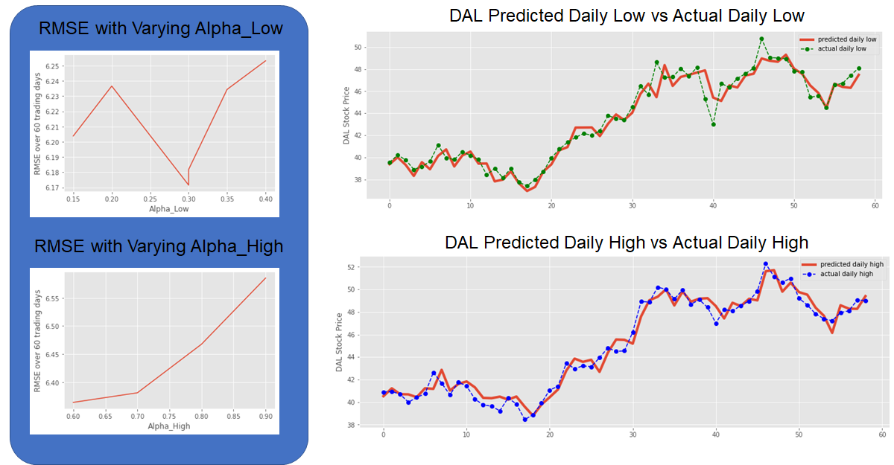

GBR is a prediction model that ensembles weaker prediction models, in this case decision trees, using an algorithm that minimizes/optimizes the loss function (RMSE).
Since GBR uses decision trees as the underlying prediction model, there is no need to normalize or transform the technical indicators or stock metrics in the dataset. Two seperate GBR models were generated to predict the Daily High and Low Stock price for DAL. The regulurization parameter (alpha) along with the number of estimators and learning rate where tuned for each GBR model.

The tuned GBR Parameters are listed below. One important note is that rather than use a "MSE" as the loss funciton for this model, a quantile loss function was applied that allowed for control of the potential prediction error.
Final Model Hyperparameters
The GBR model generated POSITIVE returns, but returned ~ 25% less than a simple ‘Buy and Hold’ strategy over the 60 day trading period.
Other Key Insights from the model: